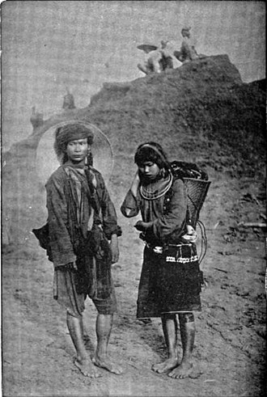

Kachins c.1900
Kachin People
Kachin People are a confederation of ethnic groups who inhabit the Kachin Hills in northern Myanmar's Kachin State and neighbouring Yunnan Province, China, and Arunachal Pradesh, Assam in Northeastern India. About one million Kachin peoples live in the region. The term Kachin people is often used interchangeably with the main subset, called the Jingpo people in China.